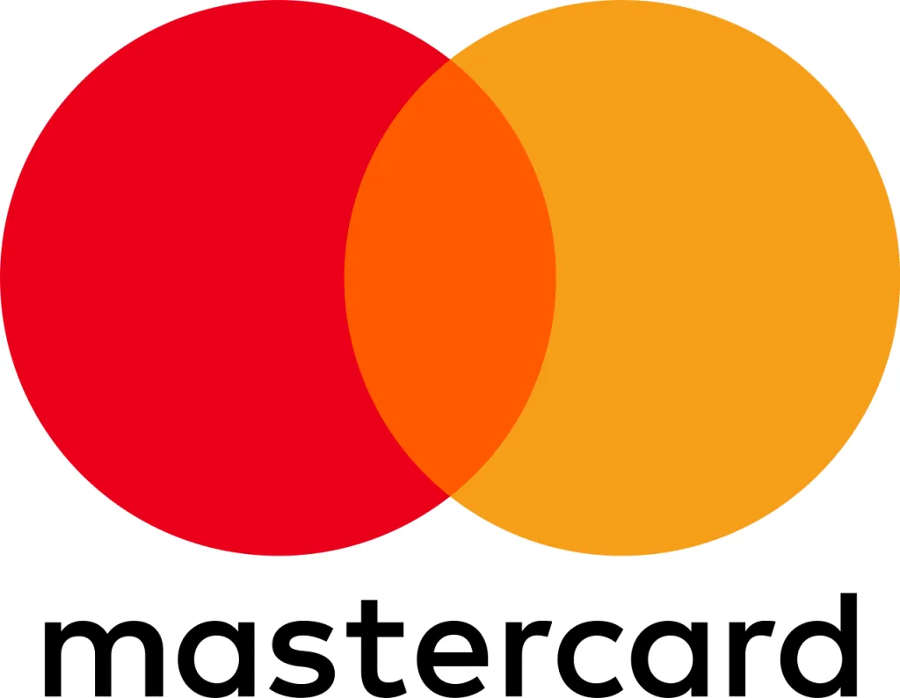
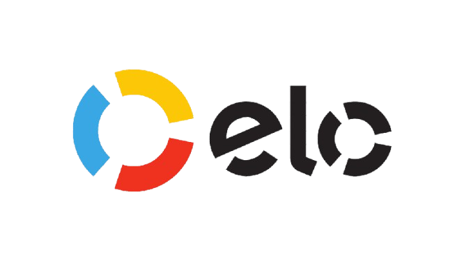

já descobriram qual fator estava impedindo a gravidez e transformaram sua jornada.
Seu ciclo menstrual é...
Qual é a sua motivação para fazer o plano?
Em qual dessas áreas você sente que algo pode estar travado?
Toque e selecione as áreas abaixo
MENTE E EMOÇÕESMEU CORPOESPERANÇA E FÉMEU CICLO
Há quanto tempo está tentando engravidar?
Você observa mudanças no corrimento ao longo do mês?
Você já viu um corrimento tipo clara de ovo?
Transparente, muito elástico, que estica entre os dedos sem quebrar.
Você usa sabonete íntimo, ducha ou lenços umedecidos com frequência?
Pode destruir o muco fértil sem você perceber. Selecione a opção mais adequada:
Você já mediu a temperatura ao acordar para confirmar a ovulação?
Você sabe quando está ovulando?
Sente uma dor leve de um lado do baixo ventre no meio do ciclo?
Dura algumas horas a um dia. Pode ser sinal da ovulação.
Como você identifica seu período fértil?
Como é o seu nível de estresse no dia a dia?
Você tem algum momento do dia só para você, sem trabalho ou preocupações?
Você fica ansiosa quando a menstruação está para chegar?
Você sente que coloca pressão demais em si mesma para engravidar?
Seu humor muda bastante ao longo do dia?
Como você descreveria seu sono nos últimos meses?
Com que frequência você pratica alguma atividade física?
Como você descreveria sua alimentação no dia a dia?
Você sente inchaço, cansaço ou dores frequentes sem causa aparente?
Você ainda acredita que vai conseguir engravidar?
Você reza, medita ou tem alguma prática de fé que te apoia nessa jornada?
Você consegue ter momentos de alegria e leveza mesmo no meio dessa jornada?
Você sente gratidão pelo seu corpo mesmo quando as coisas não acontecem no seu tempo?
Quantos dias dura seu ciclo em média?
Do 1º dia de uma menstruação até o 1º dia da próxima.
0dias
☝️
Vamos calibrar a janela fértil
Cada mulher ovula em um dia diferente do ciclo. A duração média ajuda o plano a personalizar sua leitura, em vez de usar uma média genérica de 28 dias.
Quantos dias dura sua menstruação?
Quantos dias o sangramento em si dura, do início até parar.
0dias
‼️
Padrão registrado
Vamos cruzar essa informação com os sinais que você percebe para construir seu Nível de Leitura do Ciclo.
☝️
Por que isso importa?
Menstruações muito curtas (menos de 3 dias) ou longas (mais de 7) podem indicar desequilíbrio hormonal que afeta diretamente a ovulação.
Em quantos dias seu desejo sexual aumenta no mês?
Se você não percebe, deixe 0. Esse é um dos sinais secundários da ovulação.
0dias
☝️
Libido e fertilidade estão ligadas
A libido naturalmente sobe nos dias férteis. Se isso não acontece, pode ser sinal de que a ovulação está sendo suprimida ou passando despercebida.
Seu Índice de Qualidade da Ovulação
IQO 0 a 100normal acima de 68
BaixoParcialConsciente
☝️
Ovulação Invisível
Seu corpo está enviando todos os sinais certos. Você ainda não aprendeu a linguagem deles. Isso não é culpa sua. Ninguém ensinou. O Protocolo Ciclo Fértil resolve isso nos primeiros 14 dias.
O que está acontecendo agora
Sinais do ciclo
Invisíveis
Emocional
Sobrecarregado
Estado do organismo
Inflamado
Propósito e Crença
Fragilizado
Quando começou sua última menstruação?
Vamos usar isso para projetar sua próxima janela fértil e montar seu plano.
Data
//
0%
Veja até onde seu IQO pode chegar com o plano certo.
Com base nas suas respostas, já identificamos onde está o bloqueio.
Acesso imediato ao Plano Ciclo Fértil. Renovação anual. Garantia incondicional de 7 dias.
Garantia de reembolso
Se em 7 dias você não sentir nenhuma diferença, devolvemos 100% do investimento, sem perguntas. Consulte nossa Política de Reembolso para entender as condições.
Checkout seguro


Protocolo Ciclo Fértil · CNPJ 65.931.864/0001-72
Bals Digital · Santa Catarina, Brasil